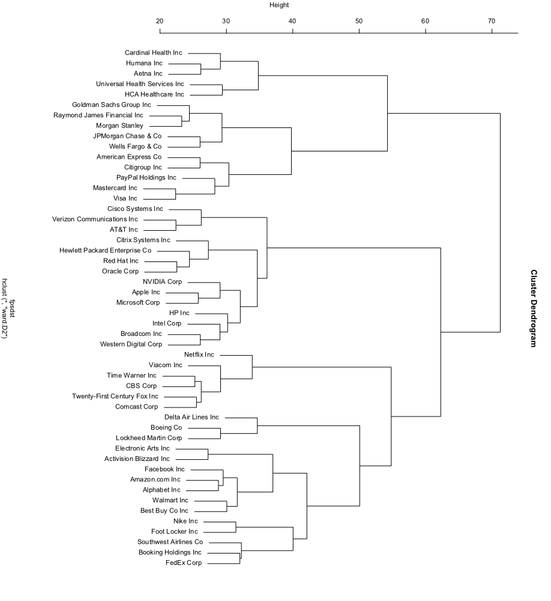

Use FactoMineR for dimension reduction
Jasper Ginn
2018-05-27
Source:vignettes/dimred.Rmd
dimred.RmdBecause the retina returns binary values in a finite space (16384 positions), doing computations is more efficient than many other methods. However, the more documents you have, the more expensive computation becomes, especially if you want to compare documents to one another.
Fortunately, we can reduce the number of dimensions of the retina dramatically while retaining sensible results. This vignette shows how this can be done.
suppressPackageStartupMessages(library(sfutils))
#> No cortical key registered. Execute 'Sys.setenv('CORTICAL_API_KEY' = '<your-key>')' to set your credentials.
# Load data
data("SAP500")We will make a subset of this data (50 companies) for the purposes of this document:
# Choose these companies
chosen <- c(1:3, 12:13,
16, 21, 28:29,
33, 35, 60:62,
69, 80, 119, 121,
149, 160, 168, 174,
183, 186, 193, 205,
219, 229, 235, 262,
266, 278, 279, 338,
339, 342, 343, 353,
355, 359, 362, 373,
378, 387, 409, 435,
436, 453, 468, 487) # 366
# Subset
subs <- SAP500[chosen]
names(subs)
#> [1] "Booking Holdings Inc" "Amazon.com Inc"
#> [3] "Alphabet Inc" "Boeing Co"
#> [5] "Netflix Inc" "Lockheed Martin Corp"
#> [7] "Humana Inc" "FedEx Corp"
#> [9] "NVIDIA Corp" "Goldman Sachs Group Inc"
#> [11] "Broadcom Inc" "Mastercard Inc"
#> [13] "Apple Inc" "Facebook Inc"
#> [15] "Aetna Inc" "Red Hat Inc"
#> [17] "Electronic Arts Inc" "Visa Inc"
#> [19] "Universal Health Services Inc" "JPMorgan Chase & Co"
#> [21] "Citrix Systems Inc" "HCA Healthcare Inc"
#> [23] "American Express Co" "Raymond James Financial Inc"
#> [25] "Microsoft Corp" "Time Warner Inc"
#> [27] "Western Digital Corp" "Walmart Inc"
#> [29] "PayPal Holdings Inc" "Nike Inc"
#> [31] "Activision Blizzard Inc" "Best Buy Co Inc"
#> [33] "Citigroup Inc" "Delta Air Lines Inc"
#> [35] "Foot Locker Inc" "Intel Corp"
#> [37] "Wells Fargo & Co" "Morgan Stanley"
#> [39] "Southwest Airlines Co" "Cardinal Health Inc"
#> [41] "CBS Corp" "Verizon Communications Inc"
#> [43] "Oracle Corp" "Cisco Systems Inc"
#> [45] "Twenty-First Century Fox Inc" "AT&T Inc"
#> [47] "Comcast Corp" "Viacom Inc"
#> [49] "HP Inc" "Hewlett Packard Enterprise Co"We fingerprint the descriptions, calculate a distance matrix and cluster the results.
# Retrieve only descriptions
desc_only <- lapply(subs, function(x) x$desc)
# Fingerprint
fps <- do_fingerprint_document(desc_only)
# To matrix
binmat <- as.matrix(fps)
rownames(binmat) <- names(desc_only)
# Distances (need to convert matrix from Matrix package to normal matrix)
fpsdst <- dist(as.matrix(binmat))
# Do hierarchical clustering and plot
clust <- hclust(fpsdst, method = "ward.D2")
We now do the same but using PCA to reduce the number of columns to 30
# Reduce dimensions
library(FactoMineR)
red <- PCA(as.matrix(binmat),
ncp = ncol(binmat), graph = FALSE)
# Predict
pred <- predict(red, binmat)$coord
# Take 64 dims
pred_filt <- pred[,1:30]
# As distance
dd <- dist(pred_filt)
# Cluster
clusts <- hclust(dd, method = "ward.D2")